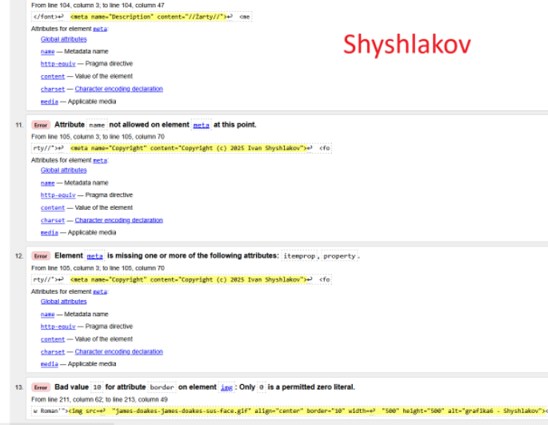

Walidacja strony HTML to
proces sprawdzania, czy jej kod źródłowy jest zgodny ze standardami W3C, identyfikując błędy i ostrzeżenia, które mogą wpływać na wyświetlanie strony w różnych przeglądarkach i urządzeniach
Walidator strony HTML to
narzędzie, które sprawdza kod strony pod kątem zgodności ze standardami (np. W3C) i pomaga wykryć błędy, niespójności czy nieprawidłowo użyte znaczniki

Wróć